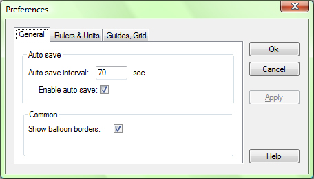

General options tab is used to set options for Auto Save and some Common options.

Auto Save have two options, Auto save interval and Enable auto save. Auto save interval is interval in which program automatically save project in file named Autosave.prtp. That file is located in folder where application is installed. Enable auto save options is switch for auto save. If it's check program will auto save project, if it's not checked program will not save automatically. We recommend that you leave Enable auto save options checked.
Common have only one option Show balloon borders. When checked you'll be able to see balloons when you place them on page, if not checked you're not be able to see balloons. When this became useful, when you need to see how your project will look like when it's finally generated to PDF, because balloons are only containers not visible items.